MOBILE · КРИПТОКОШЕЛЁК · КОНЦЕПТ
MOUNT: холодный криптокошелёк для всех
Мобильное приложение, в котором можно хранить и использовать криптовалюту. Режим обучения и простой интерфейс снимают страх первой ошибки.
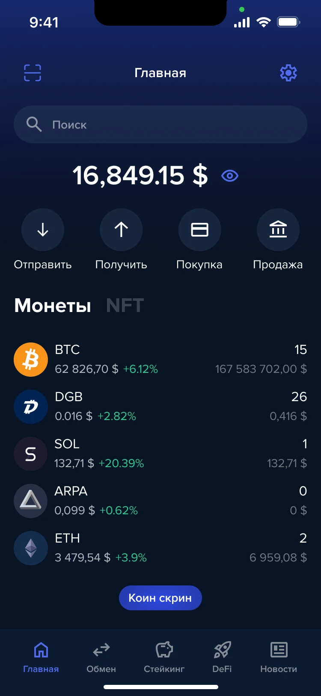
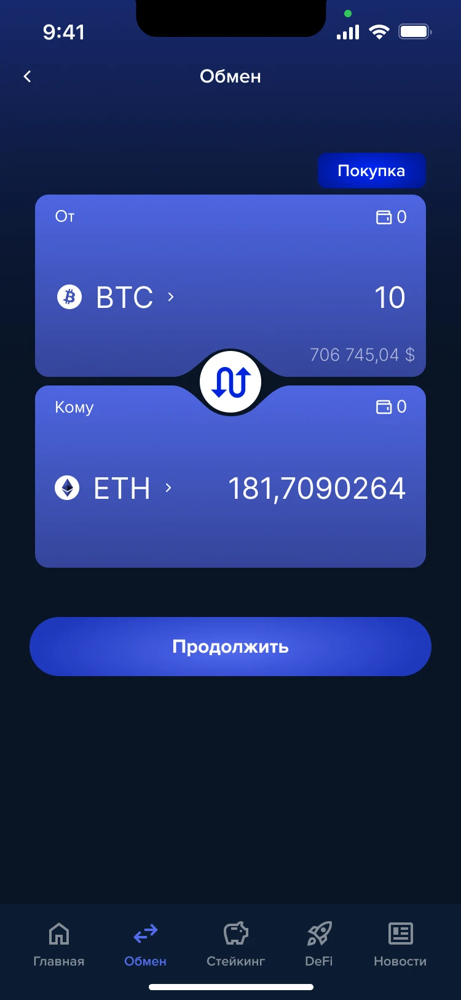
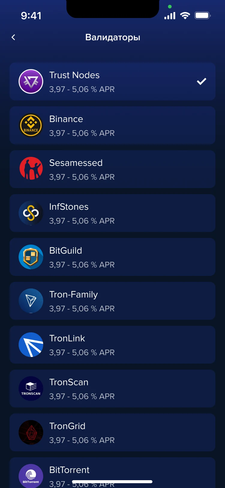
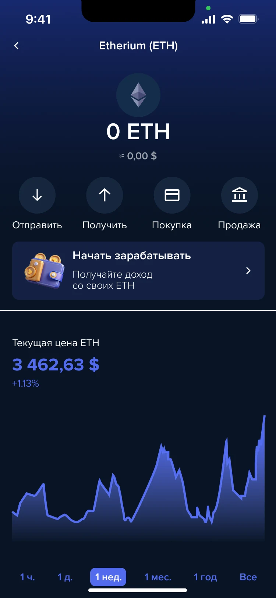
МОЯ РОЛЬ
Я сделал исследование, UX и UI: персоны и JTBD, информационную архитектуру, сценарии, вайрфреймы, интерфейс, UI-kit и интерактивный прототип. Главная цель: чтобы страх ошибки не останавливал новичка на старте.
КОРОТКО О КЕЙСЕ
MOUNT - холодный кошелёк, который помогает работать с цифровыми активами: обмен валют между пользователями, краткая рыночная аналитика, бесплатные переводы между кроссчейн-мостами и обмен криптовалют. Он подходит и тем, кто давно в крипте, и тем, кто только пришёл.
Проблема и решение
Порог входа в криптовалюты низкий, но страх ошибки и нехватка знаний останавливают значительную часть новичков.
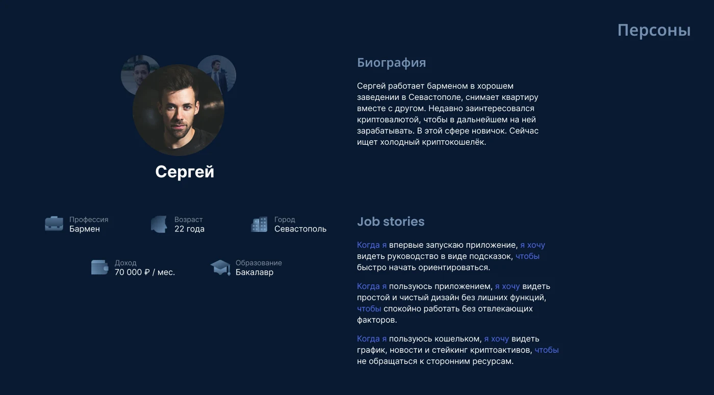
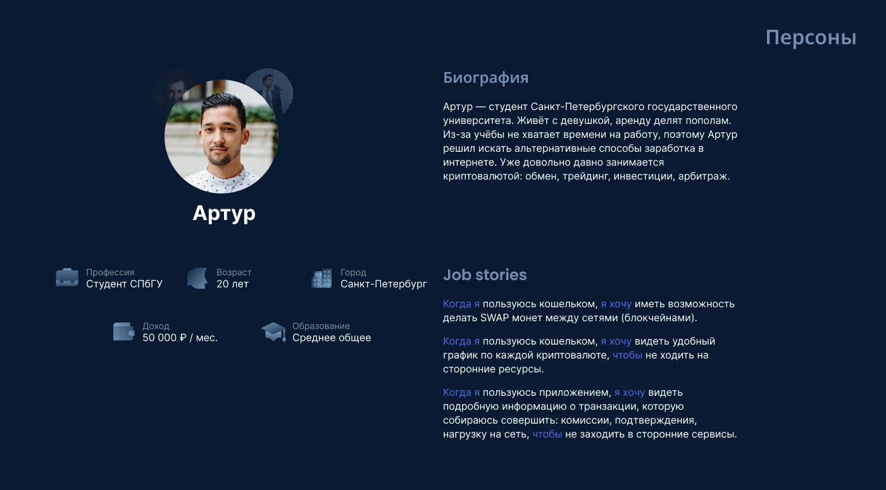
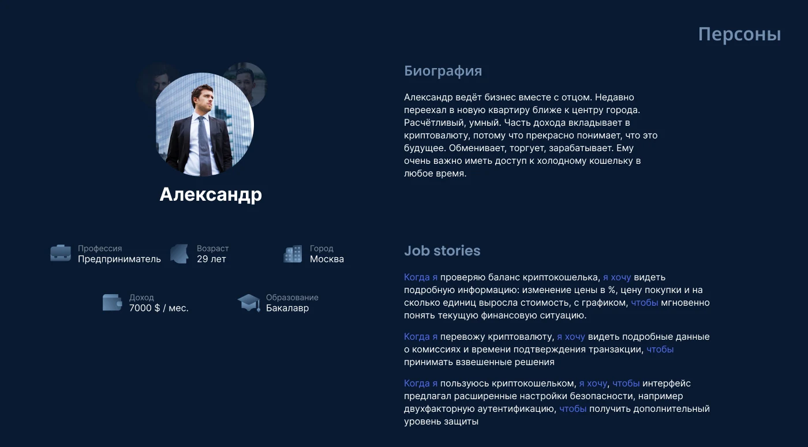
Три этапа от рынка до прототипа
Шли от понимания рынка и пользователей к интерактивному прототипу.
Исследование рынка, анализ конкурентов, мудборд.
Понимание рынка и конкурентов.
Персоны и JTBD, функциональная карта, пользовательские сценарии.
Три персоны и девять сценариев.
Вайрфреймы, визуальный дизайн и интерактивный прототип.
Кликабельный прототип приложения.
Пять решений для кошелька
От структуры до UI-kit: что я сделал на каждом этапе.
Главная как хаб: любое основное действие в пару касаний, режим выбирается на старте.
Девять сценариев из JTBD. Самые частые: перевод, обмен между сетями, новости со стейкингом.
Режимы «Новичок» и «Опытный», экран безопасности и прозрачные условия стейкинга.
Стейкинг и новости, покупка монеты, обмен между сетями с комиссией до подтверждения.
Proxima Nova, тёмно-синий #081424, голубой #526BEE и единый набор компонентов.
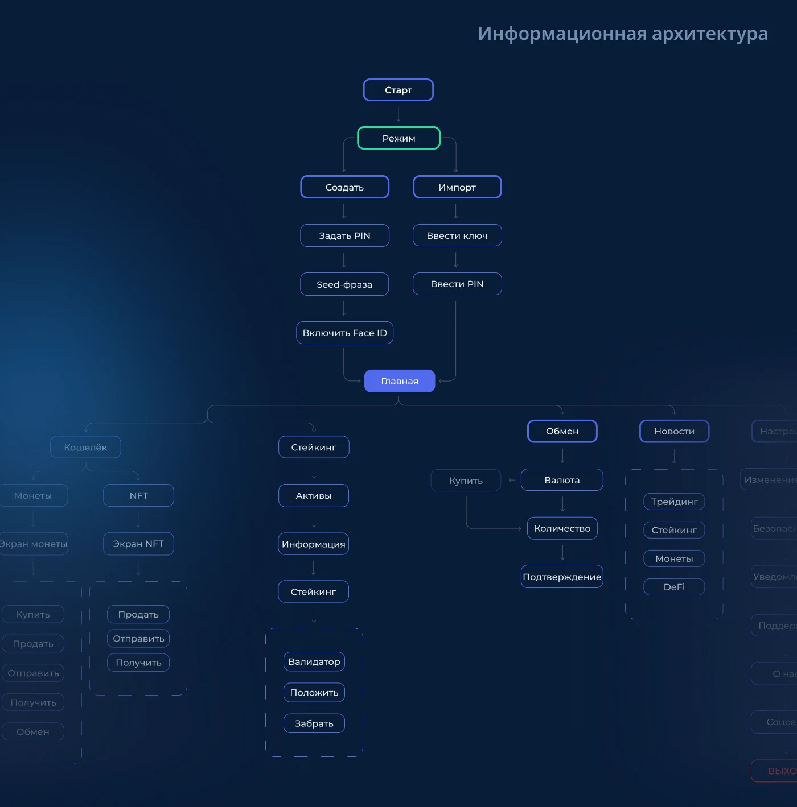
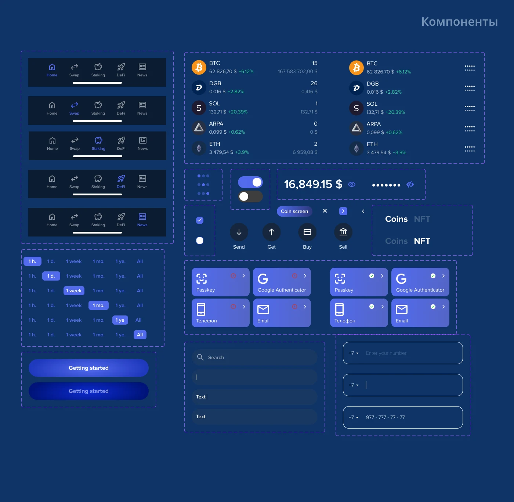
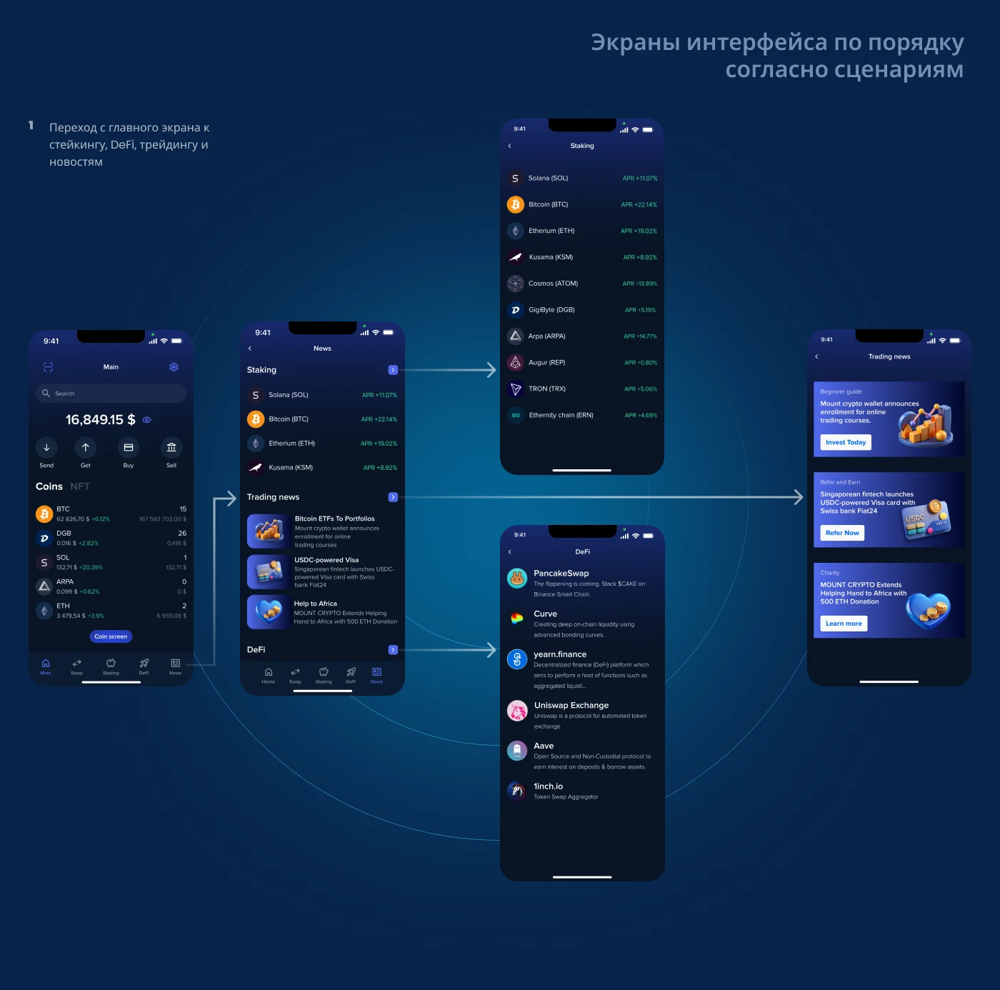
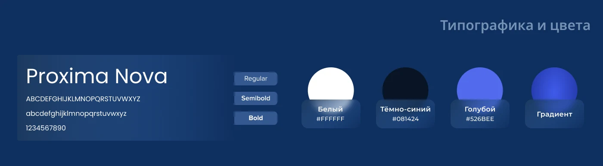
Что получилось
Мобильный криптокошелёк с режимом обучения: понятный старт для новичков и полный набор инструментов для опытных пользователей.
Что я вынес из проекта
Кошелёк с режимом обучения: новичок видит подсказки, опытный пользователь получает полный набор инструментов, а режим можно сменить в настройках.
От рынка и конкурентов к персонам и JTBD, затем к вайрфреймам, UI и интерактивному прототипу за две недели.
Исследование, персоны и JTBD, информационная архитектура, сценарии, вайрфреймы, UI и UI-kit в одном цельном процессе.
Тесты прототипа с новичками и проверка гипотезы, что режим обучения снижает отток на старте.
Другие проекты
Можете ознакомиться с моими другими проетами